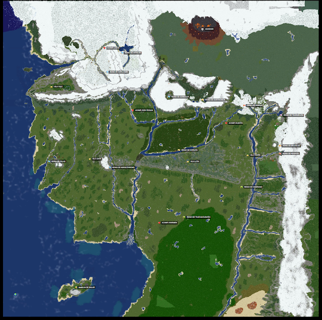
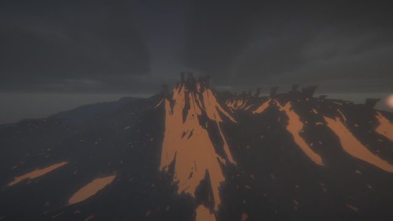

Reinos
Territórios habitados por jogadores e organizados por raça, liderança e identidade própria.
Território
Visualize os principais territórios, rotas e áreas de interesse do mundo construído para o servidor.

Territórios habitados por jogadores e organizados por raça, liderança e identidade própria.
Áreas protegidas para os primeiros passos, com acesso facilitado à Ilha de Balar.
Zona de alto risco, com inimigos, eventos especiais e missões avançadas.

Lobby central
O centro do servidor reúne mercado, NPCs, quests, recompensas e portais para vilas e reinos.